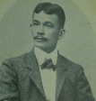

| History |
| Legislators |
| Laws |
| About |
 |
| LEGISLATORS |
| LEGISLATIVE BODY (YEAR) | INCLUSIVE YEARS |
LEGISLATIVE DISTRICT/PROVINCE | LEGISLATOR | ||
| 1 | 1st Philippine Legislature | 1907 - 1909 |
1st District Samar | ROSALES, Honorio |  |
| 2 | 1st Philippine Legislature | 1907 - 1909 |
2nd District Samar | SINKO, Luciano |  |
| 3 | 1st Philippine Legislature | 1907 - 1909 |
3rd District Samar | DAZA, Eugenio D. |  |
| 4 | 2nd Philippine Legislature | 1910 - 1912 |
1st District Samar | OBIETA, Vicente M. |  |
| 5 | 2nd Philippine Legislature | 1910 - 1912 |
2nd District Samar | AZANZA, Benito |  |
| 6 | 2nd Philippine Legislature | 1910 - 1912 |
3rd District Samar | CINCO, Eladio |  |
| 7 | 3rd Philippine Legislature | 1912 - 1916 |
1st District Samar | GOMEZ, Tomas |  |
| 8 | 3rd Philippine Legislature | 1912 - 1916 |
2nd District Samar | SABARRE, Jose |  |
| 9 | 3rd Philippine Legislature | 1912 - 1916 |
3rd District Samar | ALDE, Mariano |  |
| 10 | 4th Philippine Legislature | 1916 - 1919 |
1st District Samar | MENDIOLA, Pedro K. |  |
| 11 | 4th Philippine Legislature | 1916 - 1919 |
2nd District Samar | SALAZAR, Pastor Dacutan |  |
| 12 | 4th Philippine Legislature | 1916 - 1919 |
3rd District Samar | LUGAY RAQUEL, Jose |  |
| 13 | 5th Philippine Legislature | 1919 - 1922 |
1st District Samar | MENDIOLA, Pedro K. | |
| 14 | 5th Philippine Legislature | 1919 - 1922 |
2nd District Samar | SALAZAR, Pastor Dacutan | |
| 15 | 5th Philippine Legislature | 1919 - 1922 |
3rd District Samar | LUGAY RAQUEL, Jose | |
| 16 | 6th Philippine Legislature | 1922 - 1925 |
1st District Samar | AVELINO, Jose |  |
| 17 | 6th Philippine Legislature | 1922 - 1925 |
2nd District Samar | AZANZA, Pascual B. |  |
| 18 | 6th Philippine Legislature | 1922 - 1925 |
3rd District Samar | ABENIS, Iñigo |  |
| 19 | 7th Philippine Legislature | 1925 - 1927 |
1st District Samar | AVELINO, Jose | |
| 20 | 7th Philippine Legislature | 1925 - 1927 |
2nd District Samar | AZANZA, Pascual B. | |
| 21 | 7th Philippine Legislature | 1925 - 1927 |
3rd District Samar | MORRERO, Gerardo |  |
| 22 | 8th Philippine Legislature | 1928 - 1930 |
1st District Samar | TANCINCO, Tiburcio | |
| 23 | 8th Philippine Legislature | 1928 - 1930 |
2nd District Samar | MARABUT, Serafin S. |  |
| 24 | 8th Philippine Legislature | 1928 - 1930 |
3rd District Samar | ABOGADO, Gregorio B. |  |
| 25 | 9th Philippine Legislature | 1931 - 1934 |
1st District Samar | TANCINCO, Tiburcio | |
| 26 | 9th Philippine Legislature | 1931 - 1934 |
2nd District Samar | MARABUT, Serafin S. | |
| 27 | 9th Philippine Legislature | 1931 - 1934 |
3rd District Samar | MORRERO, Gerardo | |
| 28 | 10th Philippine Legislature | 1934 - 1935 |
1st District Samar | TAN, Antolin D. |  |
| 29 | 10th Philippine Legislature | 1934 - 1935 |
2nd District Samar | MARABUT, Serafin S. | |
| 30 | 10th Philippine Legislature | 1934 - 1935 |
3rd District Samar | MORRERO, Gerardo | |
| 31 | 1st National Assembly (Japanese Regime) | 1943 - 1944 |
Samar | MARABUT, Serafin S. | |
| 32 | 1st National Assembly (Commonwealth) | 1935 - 1938 |
1st District Samar | TANCINCO, Tiburcio | |
| 33 | 1st National Assembly (Commonwealth) | 1935 - 1938 |
3rd District Samar | BOCAR, Juan L. |  |
| 34 | 1st National Assembly (Commonwealth) | 1936 - 1936 |
2nd District Samar | AZANZA, Pascual B. | |
| 35 | 2nd National Assembly (Commonwealth) | 1939 - 1941 |
1st District Samar | ESCAREAL, Agripino P. |  |
| 36 | 2nd National Assembly (Commonwealth) | 1939 - 1941 |
2nd District Samar | AZANZA, Pascual B. | |
| 37 | 2nd National Assembly (Commonwealth) | 1939 - 1941 |
3rd District Samar | BOCAR, Juan L. | |
| 38 | National Assembly (Japanese Regime) | 1943 - 1944 |
Samar | LUCERO, Cayetano | |
| 39 | 1st Congress of the Commonwealth (Liberation Period) | 1945 - 1945 |
1st District Samar | ROSALES, Decoroso | |
| 40 | 1st Congress of the Commonwealth (Liberation Period) | 1945 - 1945 |
2nd District Samar | ARTECHE, Pedro R. |  |
| 41 | 1st Congress of the Commonwealth (Liberation Period) | 1945 - 1945 |
3rd District Samar | OPIMO, Felix | |
| 42 | 2nd Congress of the Commonwealth | 1946 - 1946 |
1st District Samar | ESCAREAL, Agripino | |
| 43 | 2nd Congress of the Commonwealth | 1946 - 1946 |
2nd District Samar | TIZON, Tito V. |  |
| 44 | 2nd Congress of the Commonwealth | 1946 - 1946 |
3rd District Samar | LOMUNTAD, Adriano D. | |
| 45 | 1st Congress of the Republic | 1946 - 1949 |
1st District Samar | ESCAREAL, Agripino P. | |
| 46 | 1st Congress of the Republic | 1946 - 1949 |
2nd District Samar | TIZON, Tito V. | |
| 47 | 1st Congress of the Republic | 1946 - 1949 |
3rd District Samar | LOMUNTAD, Adriano D. | |
| 48 | 2nd Congress of the Republic | 1950 - 1953 |
1st District Samar | ESCAREAL, Agripino P. | |
| 49 | 2nd Congress of the Republic | 1950 - 1953 |
2nd District Samar | TIZON, Tito V. | |
| 50 | 2nd Congress of the Republic | 1950 - 1953 |
3rd District Samar | ABOGADO, Gregorio B. | |
| 51 | 3rd Congress of the Republic | 1954 - 1954 |
1st District Samar | TAN, Gregorio Bienvenido V. |  |
| 52 | 3rd Congress of the Republic | 1954 - 1957 |
2nd District Samar | LIM, Marciano |  |
| 53 | 3rd Congress of the Republic | 1954 - 1957 |
3rd District Samar | ABOGADO, Gregorio B. | |
| 54 | 3rd Congress of the Republic | 1956 - 1957 |
1st District Samar | BALITE, Eladio T. |  |
| 55 | 4th Congress of the Republic | 1958 - 1961 |
1st District Samar | BALITE, Eladio T. | |
| 56 | 4th Congress of the Republic | 1958 - 1961 |
2nd District Samar | YANCHA, Valeriano C. |  |
| 57 | 4th Congress of the Republic | 1958 - 1961 |
3rd District Samar | ABRIGO, Felipe J. |  |
| 58 | 5th Congress of the Republic | 1962 - 1965 |
1st District Samar | BALITE, Eladio T. | |
| 59 | 5th Congress of the Republic | 1962 - 1965 |
2nd District Samar | VELOSO, Fernando R. |  |
| 60 | 5th Congress of the Republic | 1962 - 1965 |
3rd District Samar | ABRIGO, Felipe J. | |
| 61 | 6th Congress of the Republic | 1966 - 1969 |
Lone District Samar | VELOSO, Fernando R. | |
| 62 | 7th Congress of the Republic | 1970 - 1972 |
Lone District Samar | VELOSO, Fernando R. | |
| 63 | Regular Batasang Pambansa | 1984 - 1986 |
Samar, Region VIII | VELOSO, Fernando R. | |
| 64 | Regular Batasang Pambansa | 1984 - 1986 |
Samar, Region VIII | ROÑO, Jose A. |  |
| 65 | 8th Congress of the Republic | 1987 - 1992 |
1st District Samar | ROÑO, Jose A. | |
| 66 | 8th Congress of the Republic | 1987 - 1992 |
2nd District Samar | GARDUCE, Venancio T. |  |
| 67 | 9th Congress of the Republic | 1992 - 1995 |
1st District Samar | TUAZON, Rodolfo T. |  |
| 68 | 9th Congress of the Republic | 1992 - 1995 |
2nd District Samar | FIGUEROA, Catalino V. |  |
| 69 | 10th Congress of the Republic | 1995 - 1998 |
1st District Western Samar | TUAZON, Rodolfo T. | |
| 70 | 10th Congress of the Republic | 1995 - 1998 |
2nd District Western Samar | FIGUEROA, Catalino V. | |
| 72 | 11th Congress of the Republic | 1998 - 2001 |
1st District Western Samar | TUAZON, Rodolfo T. | |
| 73 | 11th Congress of the Republic | 1998 - 2001 |
2nd District Western Samar | NACHURA, Antonio Eduardo B. |  |
| 74 | 12th Congress of the Republic | 2001 - 2004 |
1st District Samar | UY, Reynaldo S. |  |
| 75 | 12th Congress of the Republic | 2001 - 2004 |
2nd District Samar | NACHURA, Antonio Eduardo B. | |
| 76 | 13th Congress of the Republic | 2004 - 2007 |
1st District Western Samar | UY, Reynaldo S. | |
| 77 | 13th Congress of the Republic | 2004 - 2007 |
2nd District Western Samar | FIGUEROA, Catalino V. | |
| 78 | 14th Congress of the Republic | 2007 - 2010 |
1st District Western Samar | UY, Reynaldo S. | |
| 79 | 14th Congress of the Republic | 2007 - 2010 |
2nd District Western Samar | TAN, Sharee Ann T. |  |
| 80 | 15th Congress of the Republic | 2010 - 2013 | 1st District Western Samar | SARMIENTO, Mel Senen S. |  |
| 81 | 15th Congress of the Republic | 2010 - 2013 | 2nd District Western Samar | TAN, Milagrosa 'Mila' T. |  |
| 82 | 16th Congress of the Republic | 2013 - 2016 | 1st District Western Samar | SARMIENTO, Mel Senen S. | |
| 83 | 16th Congress of the Republic | 2013 - 2016 | 2nd District Western Samar | TAN, Milagrosa T. |

Congressional Library Bureau
Legislative Library Service